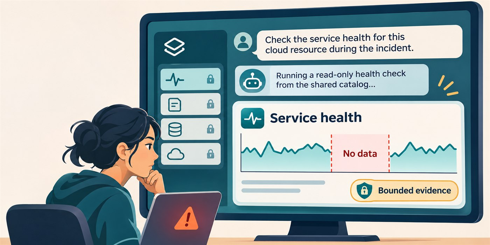

02 — AI PRODUCT CASE STUDY
Agent-Ready Diagnostics
Built a shared set of read-only diagnostic tools that let support engineers and AI assistants check cloud service health, resource activity, and failed requests. The tools return structured evidence with clear coverage limits.

THE CONTEXT
It All Started When...
A basic question opened most investigations: was the service healthy when the customer hit the problem? The answer meant switching between telemetry systems, finding someone who knew the right queries, and interpreting gaps in the data. The original health-check pilot covered a single service, and each new service would have needed its own implementation.
PRODUCT OWNERSHIP
Harpreet's Role
- Product scope — Defined the scope of a shared health check across cloud services. Suggested KPI: Share of eligible services covered by the health check.
- Technical specification — Wrote the billing diagnostics spec, including access limits and release criteria. Suggested KPI: Share of approved access and release criteria passing validation.
- Cross-functional collaboration — Agreed on data sources and rollout approvals with engineering and data owners. Suggested KPI: Median time to secure data-owner approval.
- Kanban management — Tracked diagnostic-tool changes through validation and rollout. Suggested KPI: Median days from implementation start to release approval.
- Backlog prioritization — Ranked health-check gaps by the services and investigations affected. Suggested KPI: Share of active catalog entries discoverable.
- Retrospective planning — Used gaps in diagnostic evidence to identify follow-up improvements. Suggested KPI: Repeat reports of missing evidence per 100 investigations.
WHAT CHANGED
Results
- The shared health check replaced the original single-service tool. Services with cataloged indicators can use the same check without a separate implementation.
- Diagnostic responses distinguish confirmed threshold breaches, healthy signals, and missing data. They also report partial coverage so investigators can see where more evidence is needed.
- The billing diagnostics capability shipped behind an explicit release gate, giving approved consumers a controlled way to retrieve billing evidence.
ILLUSTRATIVE OUTCOMES
Measurement example
- 48 of 48active catalog entries discoverable.
- 50 → 31 minmedian root-cause time across 420 comparable cases (38% shorter).
- 9 integrationsagent integrations across the broader diagnostics platform.
EXPLORE THE FULL PROJECT
Want the complete case study?
Email me for the complete case study and program materials.
Email for the complete case study